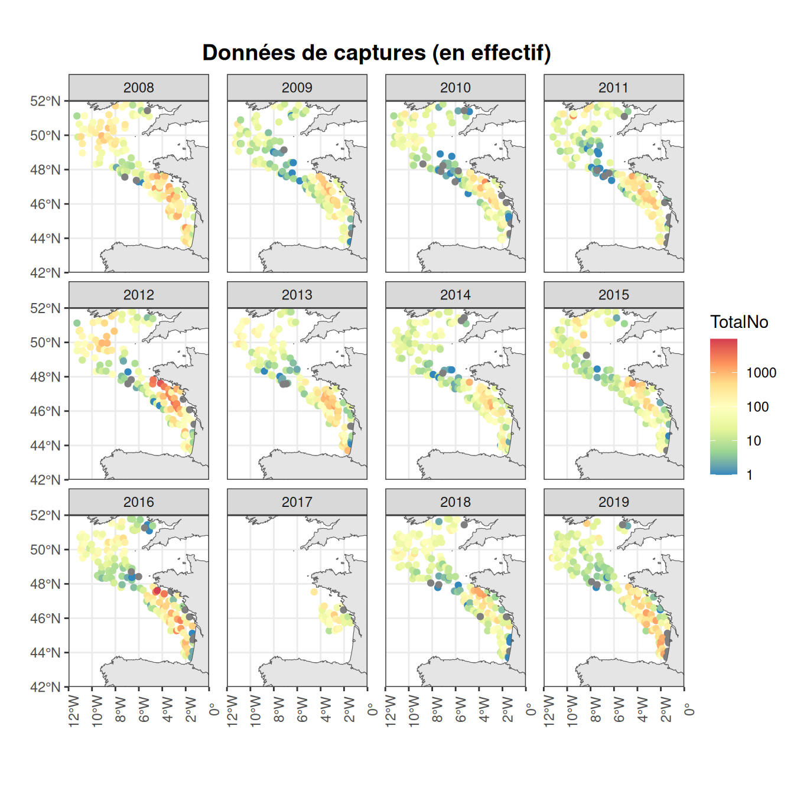

TD5 Evaluation de l’abondance de merlu dans le Golfe de Gascogne - Evaluation Statistique Spatiale
Sur la base des données Evohé utilisées dans la thèse de B. ALglave
Author
Affiliations
Marie-Pierre Etienne (sur la base des idées expolorée dans FinistR2023 )
ENSAI - CREST
https://marieetienne.github.io/statspat
Published
January 13, 2026
$$
$$
# Base de R INLAlibrary(tidyverse)
── Attaching core tidyverse packages ──────────────────────── tidyverse 2.0.0 ──
✔ dplyr 1.1.4 ✔ readr 2.1.5
✔ forcats 1.0.0 ✔ stringr 1.5.1
✔ ggplot2 3.5.1 ✔ tibble 3.2.1
✔ lubridate 1.9.4 ✔ tidyr 1.3.1
✔ purrr 1.0.4
── Conflicts ────────────────────────────────────────── tidyverse_conflicts() ──
✖ dplyr::filter() masks stats::filter()
✖ dplyr::lag() masks stats::lag()
ℹ Use the conflicted package (<http://conflicted.r-lib.org/>) to force all conflicts to become errors
library(INLA)
Loading required package: Matrix
Attaching package: 'Matrix'
The following objects are masked from 'package:tidyr':
expand, pack, unpack
This is INLA_24.12.11 built 2024-12-11 19:58:26 UTC.
- See www.r-inla.org/contact-us for how to get help.
- List available models/likelihoods/etc with inla.list.models()
- Use inla.doc(<NAME>) to access documentation
library(sf)
Linking to GEOS 3.12.1, GDAL 3.8.4, PROJ 9.4.0; sf_use_s2() is TRUE
library(gstat)library(mapdata)
Loading required package: maps
Attaching package: 'maps'
The following object is masked from 'package:purrr':
map
Objectif de l’étude : Estimer l’abondance de merlus à partir d’un sondage stratifié dans le Golfe de Gascogne et en Mer Celtique.
Dans le cadre de l’étude d’une population marine, l’Institut Français de Recherche pour l’Exploitation de la Mer (IFREMER) organise chaque année des campagnes océanographiques qui permettent de récolter des données et d’obtenir des estimations de l’abondance.
Ces données sont cruciales pour le suivi des espèces marines afin d’évaluer le bon état écologique des populations exploitées. Pour ce TP, nous allons étudier la campagne EVHOE dont un déscriptif est donné au lien: https://campagnes.flotteoceanographique.fr/series/8/fr/.
Données
Les données EVHOE (Evaluation Halieutique Ouest de l’Europe) sont des données échantillonnées chaque année en Octobre/Novembre. Cette campagne cible les espèces bentho-démersales du golfe de Gascogne (GdG) et de Mer Celtique (MC). L’échantillonnage est stratifié suivant les classes de profondeur et les grandes unités écologiques du GdG et de MC
(voir le shapefile Agreed_Strata_EVHOE_Polyg_WGS84.shp et l’objet evhoe_shp)datr.
Les poissons sont échantillonnées à l’aide d’un chalut ; ils sont comptés, pesés, sexés pour tout ou partie du trait de chalut. Les données entre 2008 et 2019 sont stockés dans le fichier EVHOE_2008_2019.RData. Il est constitué de trois data frame:
Save_Datras$datras_HH.full regroupe les principales informations de chaque trait de chalut (e.g. localisation, période de relevé)
Year: année
long: longitude
lati: latitude
StNo: numéro de station
HaulNo: numéro du trait de chalut
Depth: profondeur
Distance: distance parcourue pour un trait de chalut (en métres). Il y a des NA dans cette colonne (données manquantes). Dans ce cas, on prend la moyenne de la distance des autres traits de chaluts pour remplacer les NA.
Save_Datras$datras_sp.HL.full regroupe le poids et les abondances sur l’ensemble d’un trait de chalut de chaque combinaison ‘trait de chalut x espèce x classe de taille x sexe’ (données ré-haussées)
Year: année
long: longitude
lati: latitude
StNo: numéro de station
HaulNo: numéro du trait de chalut
scientificname: nom scientifique
LngtClass: classe de taille
TotalNo: comptages (nombre d’individus par combinaison de facteur)
Récolte des données EVHOE.
Chargement des données
La zone d’intérêt
Le jeu de donées evhoe_shp défini ci-dessous contient les contours de la zone de suivi.
xlims <-c(-12,0)ylims <-c(42,52)# Charger les données EVHOE et les strates de la campagneload("data/EVHOE_2008_2019.RData")# Definir la zone d'intérêtevhoe_shp <-st_read("data/STRATES/Agreed_Strata_EVHOE_Polyg_WGS84.shp") %>% dplyr::select(STRATE) |>mutate(area_strata =as.numeric(st_area(geometry)/1e6)) |>##surface en km2summarise(area_zone_evohe =sum(area_strata))
Reading layer `Agreed_Strata_EVHOE_Polyg_WGS84' from data source
`/__w/statspat/statspat/data/STRATES/Agreed_Strata_EVHOE_Polyg_WGS84.shp'
using driver `ESRI Shapefile'
Simple feature collection with 29 features and 7 fields
Geometry type: MULTIPOLYGON
Dimension: XY
Bounding box: xmin: -11.6487 ymin: 43.61471 xmax: -1.109647 ymax: 52.19023
Geodetic CRS: WGS 84
# Espèce pour l'analysespecies <-"Merluccius_merluccius"
Données de traits de chaluts
# Pour le calcul de la taille de l'échantillon:# --> l'ouverture du chalut est de 10 m# l'aire balayé par le chalut correspond # à la distance parcourue (Distance) x l'ouverture du chalut (10m)Haul_df <- Save_Datras $datras_HH.full %>% dplyr::select(Year,long,lati,StNo,HaulNo,Depth,Distance) %>%mutate(Area_swept = Distance *10) # aire chalutée par chaque trait Haul_df$Area_swept[which(is.na(Haul_df$Area_swept))] <-mean(Haul_df$Area_swept,na.rm = T)# on renumérote les années de 1 à 12Haul_df <- Haul_df |>mutate(annee_suivi =as.numeric(as.factor(Year)))n_year <-max(Haul_df$annee_suivi)# Converti en sf et jointure avec le shapefile EVHOEHaul_sf <-st_as_sf(Haul_df,coords=c("long","lati"),crs =st_crs(evhoe_shp))Haul_sf_evohe <-st_intersection(Haul_sf,evhoe_shp)
Warning: attribute variables are assumed to be spatially constant throughout
all geometries
`summarise()` has grouped output by 'Year', 'long', 'lati', 'HaulNo'. You can
override using the `.groups` argument.
Joining with `by = join_by(Year, long, lati, HaulNo)`
# Ne garder que le traits de chalut au sein de la zone evoheCatch_sf_2 <-st_as_sf(Catch_df,coords =c("long","lati"),crs=st_crs(evhoe_shp)) %>%st_intersection(evhoe_shp)
Warning: attribute variables are assumed to be spatially constant throughout
all geometries
# Filtrer sur les espècesCatch_sf_3 <- Catch_sf_2 %>%select_at(vars(Year,HaulNo,Area_swept,TotalNo, StNo, Depth))Catch_sf_3$TotalNo[which(is.na(Catch_sf_3$TotalNo))] <-0# Plotggplot(Catch_sf_3)+geom_sf(aes(col=TotalNo))+scale_color_distiller(palette="Spectral",trans ='log10')+facet_wrap(.~Year)+geom_sf(data=mapBase)+coord_sf(xlim = xlims, ylim = ylims, expand =FALSE)+theme_bw()+theme(axis.text.x =element_text(angle =90),plot.title =element_text(hjust =0.5,face ="bold",size=14),panel.spacing.x =unit(4, "mm"))+ggtitle("Données de captures (en effectif)")+ylab("")+xlab("")
Warning in scale_color_distiller(palette = "Spectral", trans = "log10"): log-10
transformation introduced infinite values.

Nous souhaitons ajuster un modèle liant l’abondance (i.e le nombre de merlus pechés ) à la profondeur, en prenant en compte une éventuelle struture spatiale dans le but d’estimer l’abondance sur l’ensemble de la zone pour chaque année.
On veut obtenir pour chaque année une carte d”abondance spatialisée et une abondance totale sur la zone d’intérêt. On souhaite également mesuré l’effet de la profondeur (bathymétrie) sur l’abondance et regarder si cet effet potentiel est constant d’une année sur l’autre. Pour obtenir l’abondance totale, nous allons prédire l’abondance en tout point d’une grille et approcher l’abondance totale par la somme de l’abondance sur les points de la grille multiplié par la taille d’une celleule de grille.
Programme de travail :
Si l’abondance dépend de la profondeur on va avoir besoin de la profondeur en tout point de la grille sur laquelle on souhaite prédire. Commencer par utiliser l’ensemble des points du jeu de données pour estimer la profondeur en tout point d’une grille que vous aurez choisi.
Ajuster pour chaque année un modèle spatial faisait le lien entre le nombre de merlus pêchés et la profondeur tout en intégrant une dépendance spatiale.
Prédire l’abondance en tout point de la grille et calculer l’abondance totale sur la zone pour chaque année. Représenter la série des abondances estimées sur un graphique (années x abondance). Comment se porte le stock de merlu ?
La série des abondances estimées est-elle sensible à la finesse de la grille ? A la finesse du maillage utilisé dans INLA ?
Rendu : vous me rendrez un document en pdf (avec le code R annexe ) présentant votre démarche, les modèles choisis et vous discuterez les résultats obtenus. Le document (hors annexe) doit faire 10 pages maximum. Faites attention à la lisibilité de vos sorties R.